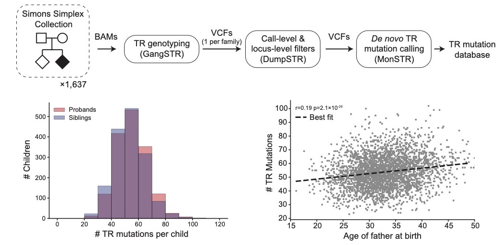
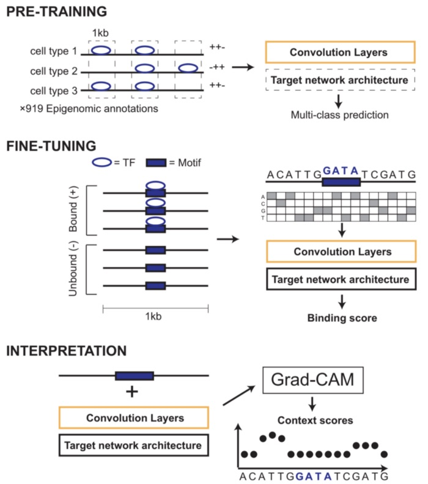
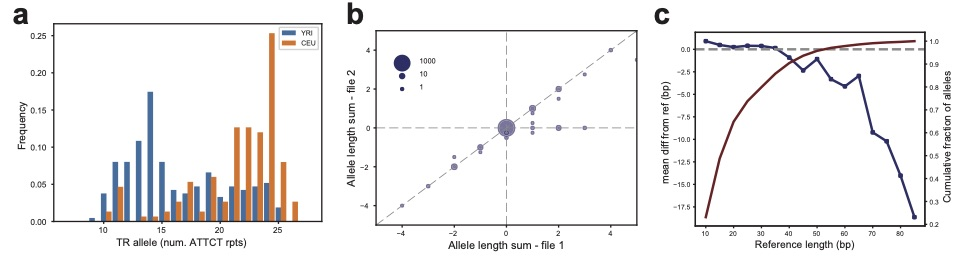
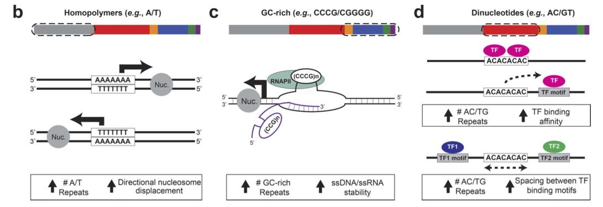
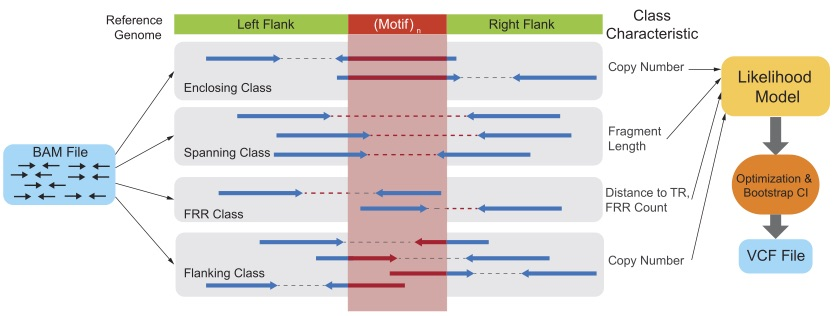
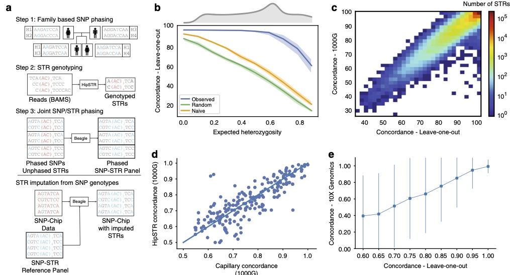

The Gymrek Lab is located at the University of California San Diego. We are part of the Department of Medicine's Division of Genetics and the Department of Computer Science and Engineering. We are also a member of the Bioinformatics and Systems Biology program at UCSD.
What do we do?
Our overall goal is to understand complex genetic variants that underlie human disease. We are particularly interested in repetitive DNA variants known as short tandem repeats (STRs) as a model for complex variation. Our work focuses on developing computational tools for analyzing complex variation from large-scale sequencing data and applying these tools to learn about the contribution of repetitive variation to human disease. Another major interest of our group is understanding how repeats and other types of genetic variation impact gene regulation and other complex traits.|
webstr.ucsd.edu |
Toolkit for STR Analysis |
STR Imputation |
Featured publications
| In this study we develop methods to identify (MonSTR) and prioritize (SISTR) de novo mutations at tandem repeats in WGS data, and then characterize patterns of TR mutations in the general healthy population, as well as, in individuals affected by autism. This work was a fun collaboration with the Lohmueller Lab from UCLA! |
Patterns of de novo tandem repeat mutations and their role in autism.Ileena Mitra, Bonnie Huang, Nima Mousavi, Nichole Ma, Michael Lamkin, Richard Yanicky, Sharona Shleizer-Burko, Kirk E. Lohmueller, Melissa Gymrek. (Nature 2021). [pubmed] |
| We designed a machine learning framework, AgentBind, to identify and interpret sequence features that are most important for transcription factor (TF) binding. Unlike most previous works studying binding motifs, our work focuses on the sequence context in the vicinity of motifs and studies its role in TF binding. |
Deep neural networks identify sequence context features predictive of transcription factor binding.An Zheng, Michael Lamkin, Hanqing Zhao, Cynthia Wu, Hao Su & Melissa Gymrek (Nature Machine Intelligence 2021). [DOI] |
TRTools: a toolkit for genome-wide analysis of tandem repeats.Nima Mousavi, Jonathan Margoliash, Neha Pusarla, Shubham Saini, Richard Yanicky, Melissa Gymrek (Bioinformatics 2020). [pubmed] |
This manuscript describes TRTools, a suite of tools for analysis of tandem repeat variation. It offers command-line tools for filtering, merging, and performing QC on VCFs containing tandem repeat genotypes. TRTools can also be imported as a Python library into custom scripts. |
| In this study we demonstrate that variation at thousands of tandem repeats across the genome have an impact on expression of nearby genes across many human tissue types. Effects are strongest for GC-rich STRs near transcription start sites. This work was a fun collaboration with the Goren Lab next door! |
The impact of short tandem repeat variation on gene expression.Stephanie Feupe Fotsing, Jonathan Margoliash, Catherine Wang, Shubham Saini, Sharona Shleizer-Burko, Alon Goren, Melissa Gymrek (Nature Genetics 2019). [pubmed] |
Profiling the genome-wide landscape of tandem repeat expansions.Nima Mousavi, Sharona Shleizer-Burko, Richard Yanicky, Melissa Gymrek (Nucleic Acids Research 2019). [pubmed] |
GangSTR is a tool for profiling tandem repeat variation from next-generation sequencing datasets. It takes as input aligned reads (BAMs) for one or more samples and outputs VCF files with estimated repeated lengths at a reference set of TRs. GangSTR can capture variation both at short and expanded TRs. |
| In this study we generate a SNP-STR haplotype panel by phasing STRs onto SNP haplotypes. This panel can be used to impute STR genotypes into datasets for which they cannot be directly genotyped (e.g. SNP genotyping array data commonly used for GWAS studies). We found that the majority of STRs can be accurately imputed, with a mean genome-wide imputation accuracy 97% for European samples. |
A reference haplotype panel for genome-wide imputation of short tandem repeats.Shubham Saini, Ileena Mitra, Nima Mousavi, Stephanie Feupe Fotsing, Melissa Gymrek (Nature Communications 2018). [pubmed] |